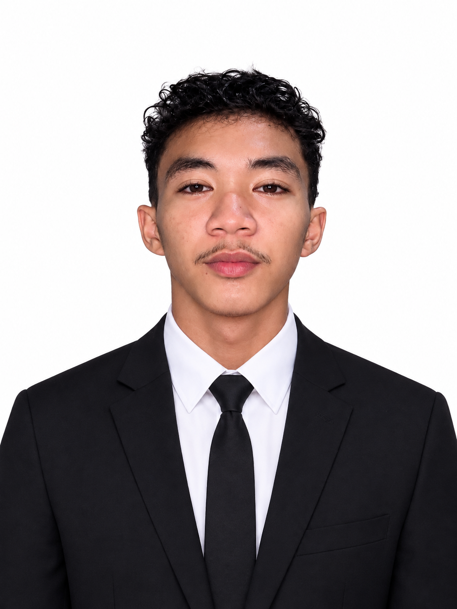

I'm a first-year BSIT student who is passionate about technology, programming, and game development.

Hi! I'm Jheryck Vrent Gontiñas, a first-year Bachelor of Science in Information Technology student from the Philippines.
I am interested in computers, programming, technology, and game development. I am currently learning C programming, web development, and other computer-related skills.
First-Year Student
Cordova Public College (CPC)
2026 – Present
I am studying Information Technology, where I am learning programming, web development, computer fundamentals, and other IT-related subjects.
As an Information Technology student, I am developing different skills that will help me in my studies and future career.
In my free time, I enjoy activities that help me relax, have fun, and improve myself.
As a BSIT student, I want to improve my programming and web development skills and become a skilled IT professional.
One of my dreams is to create my own video game someday. I want to learn game development and use programming to bring my ideas to life.
For now, I am focusing on learning programming and improving my skills step by step.
If you want to connect with me, feel free to reach out!
Email: jheryckvrentgontinas@gmail.com
Location: Cordova, Cebu, Philippines
School: Cordova Public College